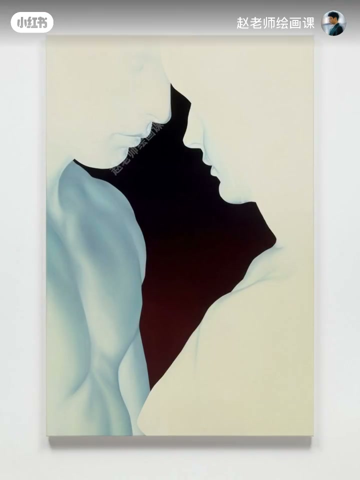
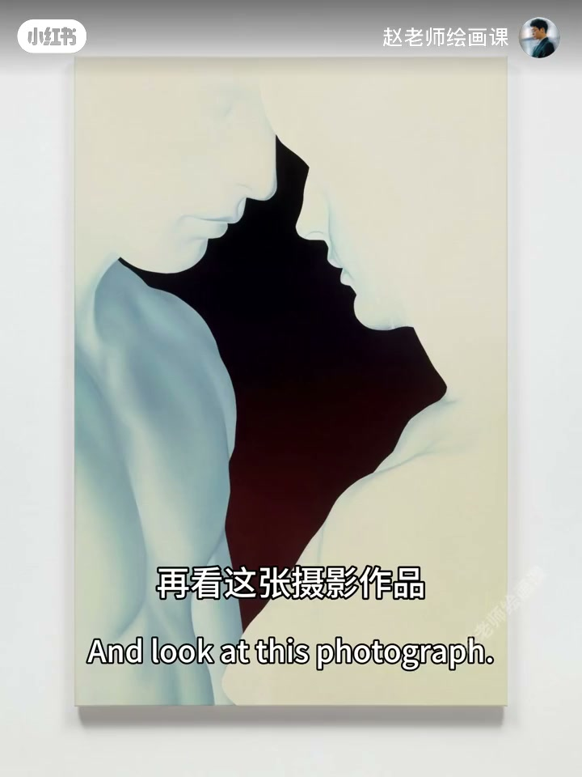
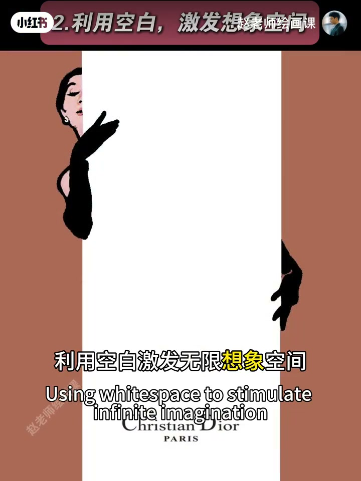
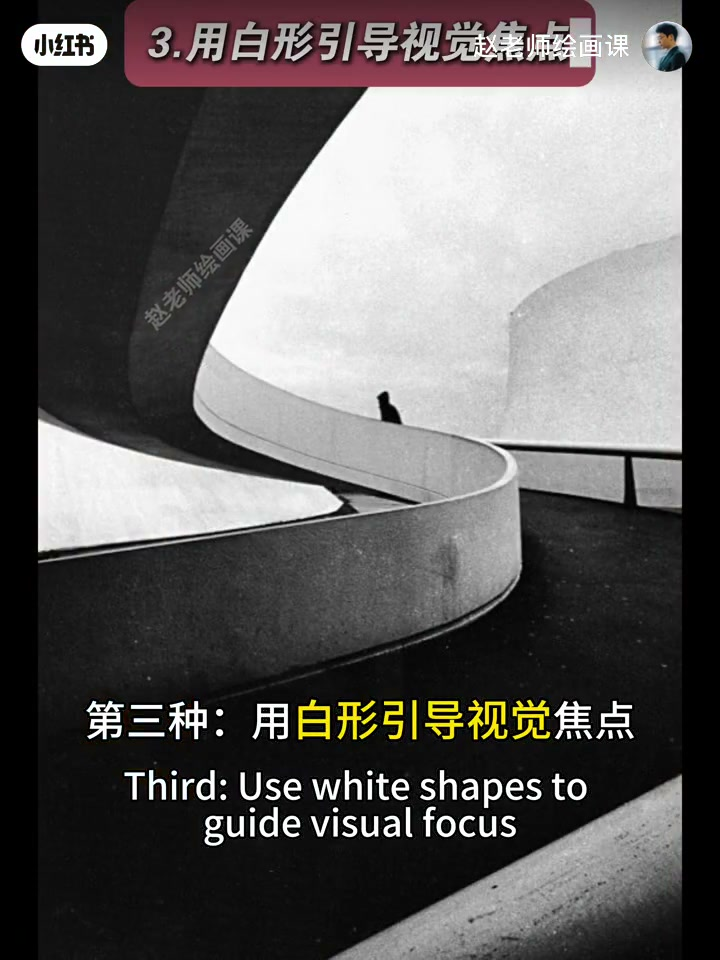
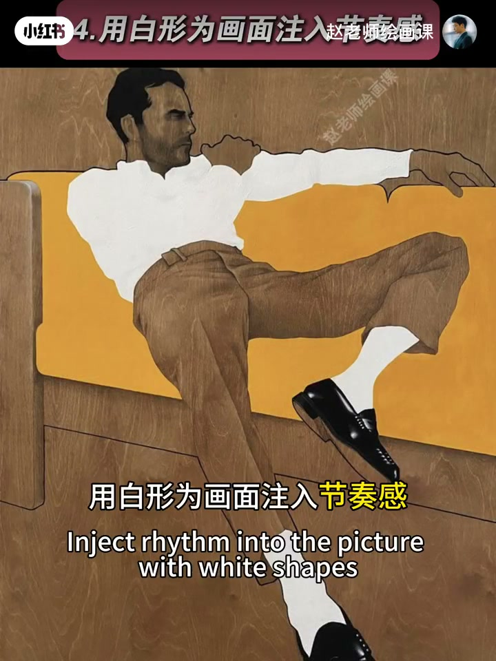

内容要点
上期讲留白重要，本期四招落地。一、只保留最典型信息：侧脸轮廓已够亲密联想，五官头发背景可删；徽派摄影留白墙青瓦，删天空墙面细节。二、用空白激发想象：人物置入无细节矩形，或大半身体被空白遮住。三、用白形引导焦点：桥面与镂空留白把视线送向行人。四、用白形注入节奏：衣袜改纯白块，配黑发皮鞋灰裤立刻明快。沉闷时试着删细节、留白形。
知识结构
侧脸／青瓦；次要全部可删。
空白矩形藏身体与未来感。
桥面白形+镂空强化视线。
白块替代细节，黑白灰跳动。
留白可操作：先删到只剩典型信息，再决定空白是留给想象、用来引视线，还是当成节奏里的「白音符」。
00:00-00:47技巧一：保留最典型信息
上期重要性之后，本期四大技巧。第一种：保留最典型信息，其余大胆留白。插画里两人低眉亲密互动，只留侧脸轮廓——姿势既能营造亲密，又能引发亲热联想，故眼睛头发耳朵乃至背景都可用留白删除，得极简冲击力。
摄影同理：白墙下青瓦最典型（徽派建筑），大胆删除天空与墙面细节再稍加点缀，瞬间高级。00:14／00:48。


00:47-01:44技巧二：空白激发想象
第二种：利用空白激发无限想象。墙地有细节，中间人物却置身毫无细节的空白长方形，生出对未来的憧憬，空白本身让未来充满可能。
另一插画：巨大空白矩形遮住女人身体，只露半张脸与手，衣着发饰体态全藏，留给观众遐想，画面独具韵味。01:12／01:27。

01:44-02:09技巧三：白形引导焦点
第三种：用白形引导视觉焦点。摄影中巧妙视角让桥面形状把视线牢牢引向远处行人；天空及桥体镂空形成的留白区域也在强化这种引导——留白助力视觉引导。01:48。

02:09-02:50技巧四：白形注入节奏
第四种：用白形为画面注入节奏。舍弃衣服袜子细节，以纯粹白块代替；这些白块在黑发、皮鞋与灰裤搭配下，产生轻松明快的视觉节奏。画面沉闷时，不妨删掉一些细节、主动留出白色形状，看是否马上舒服。
真正用好留白不易，正确思路加科学训练可成高手；形式美构成课预告。02:13。

完整转录（48段）
以下文本由 Whisper medium 模型自动转录，可能存在少量识别误差，已尽可能修正。
今天上一期 我们了解了留白的重要性
今天我们就用四大留白技巧 让你的画面高级又出彩
第一种 保留最典型信息 其余大胆留白
来看这幅插画 两人低谋亲密互动时
似乎流淌着无需言说的爱意
画面只保留了人物侧脸的轮廓
这正是最典型的信息
为什么
因为两人侧脸姿势既能营造亲密的氛围
又能天然的引发亲热联想
因此相对次要的眼睛 头发 耳朵 乃至背景
都可以大胆的用留白来删除
最终呈现出极其简约又富有冲击力的画面效果
再看这张摄影作品 好看吧
猜一猜它保留了什么 又删除了什么
我猜啊 白墙下的青瓦最为典型
类似这样的灰派建筑
所以大胆删除天空和墙面的细节
再稍加点缀 画面效果瞬间高级
第二种 利用空白激发无限想象空间
这幅画面中墙体 地面都有细节
而中间人物却置身于一个毫无细节的空白长方形中
有一种对未来的憧憬感
而空白本身似乎让未来充满了无限可能性
这幅插画中 巨大的空白长方形遮住了女人的身体
只露出半张脸和手
她的衣着 发饰 动作体态 完全被隐藏
留给观众无限的遐想空间
让画面充满了独特韵味
第三种 用白行引导视觉焦点
在这幅摄影作品中 通过巧妙的视角
让桥面的形状把观众视线牢牢地引向远处的行人
仔细观察 不难发现
天空及桥体 镂空形成的留白区域
也在强化这种视线引导
留白在助力画面视觉引导上起到了关键作用
最后一种 用白行为画面注入节奏感
这幅作品中 舍弃了衣服和袜子的细节
以纯粹的白块代替
这些白块在黑色头发 皮鞋和灰色裤子的搭配下
产生了轻松明快的视觉节奏感
其实啊 当你的画面沉闷时
不妨试着删掉一些细节 主动留出白色形状
看看画面会不会马上变得舒服起来
好了 要想真正用好留白 并非易事
但正确的思路加科学的训练也能成为留白高手
详情请关注我近期即将上线的形式美构成课程
下期见 拜拜